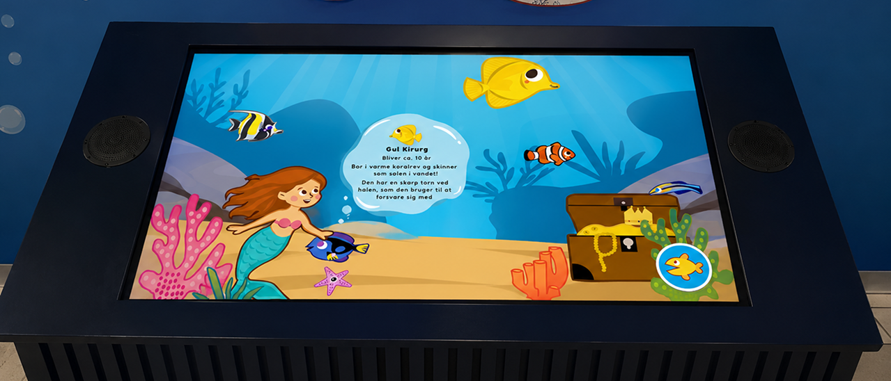
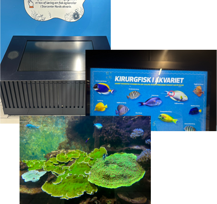
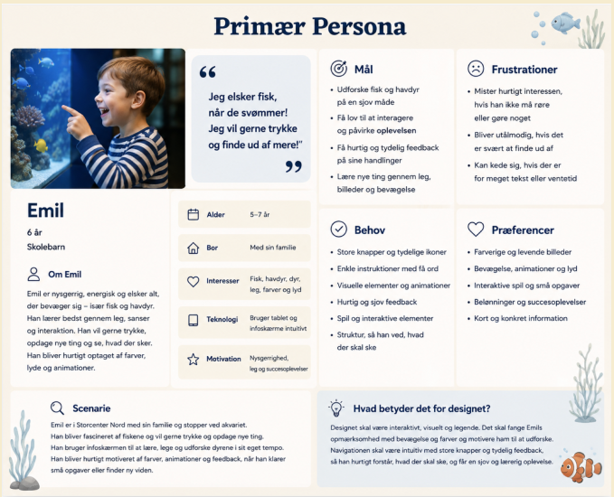
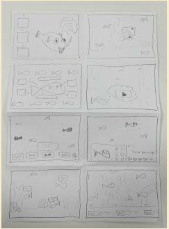
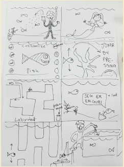
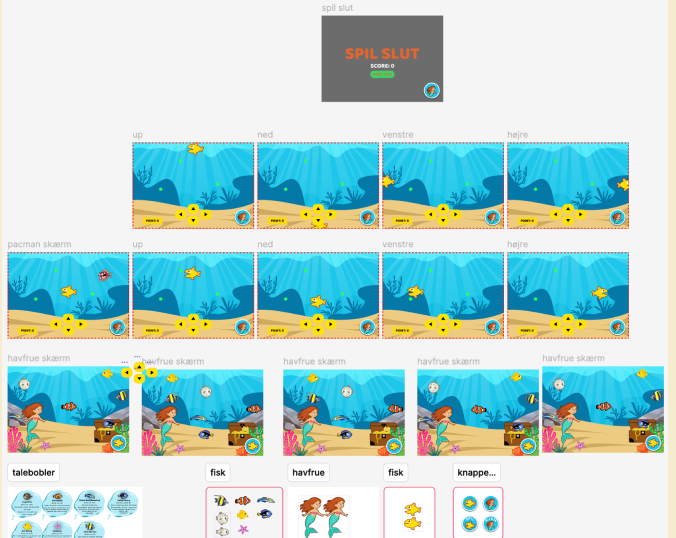

(01)
AQUARIUM INFOSCREEN

EXPLORE THEPROTOTYPE
CASE
Designing an intuitive digital informative experience.
This project was centered on designing an interactive informative screen for visitors at an aquarium in Storcenter Nord. The goal was to present educational content in a way that was both engaging and easy to navigate while supporting visitors throughout their experience.
By combining user-centered design with a simple and colorful design, we explored how digital interfaces can make information more accessible, interactive and enjoyable for visitors of all ages.
RESEARCH
Understanding users in a public environment.
Our design decisions were formed by research into user behaviour, visitor needs and information consumption in public spaces. We explored how users interact with digital information screens and identified the importance of engaging content, simplicity and quick access to relevant information.
These insights helped define the overall information architecture and ensured that navigation remained intuitive, allowing visitors to focus on exploring the aquarium rather than figuring out how to use the interface.


DESIGNPROCESS
Creating a clear and engaging interface.
The design process combined idea generation, wireframing and prototyping in Figma, alongside continuous iteration. Early concepts were explored through sketches before evolving into interactive, clickable prototypes, allowing us to validate navigation patterns and refine the overall user experience.
Throughout the project, we focused on engaging interactions, consistency and feedback with sounds or animations to ensure that information could be understood quickly in a public environment. The final interface was built with HTML, CSS and JavaScript, and user feedback and iterative improvements helped shape a result that balances design with usability.



FINAL OUTCOME
An interface designed to support exploration and learning.
The final solution is an interactive information screen that helps visitors discover aquarium exhibits through an intuitive and engaging digital experience. By presenting information with an engaging design supported by clear navigation and visual guidance, the interface encourages exploration without overwhelming the user.
The project demonstrates how thoughtful UX and interface design can transform educational information into an accessible, enjoyable and user-friendly experience for visitors of all ages.